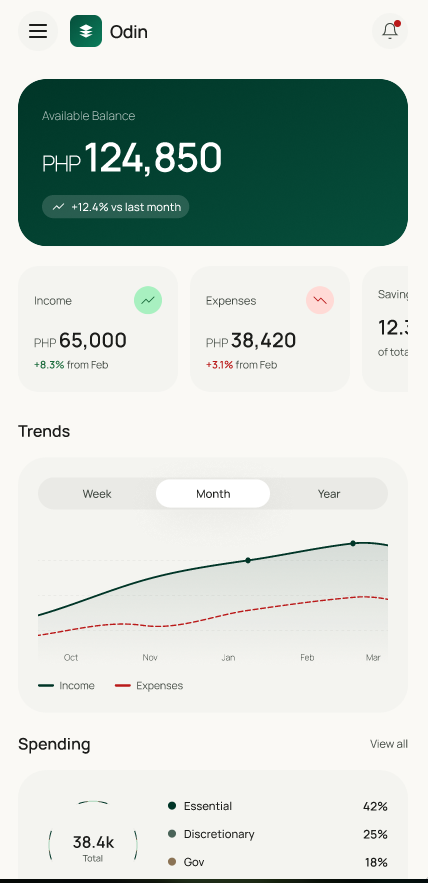
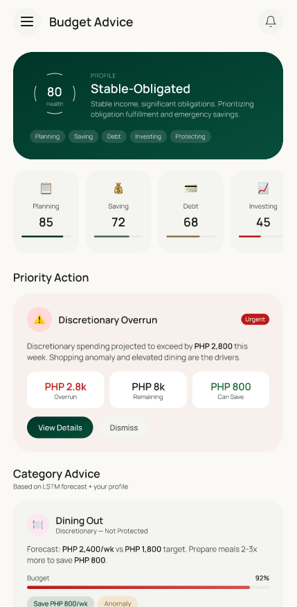
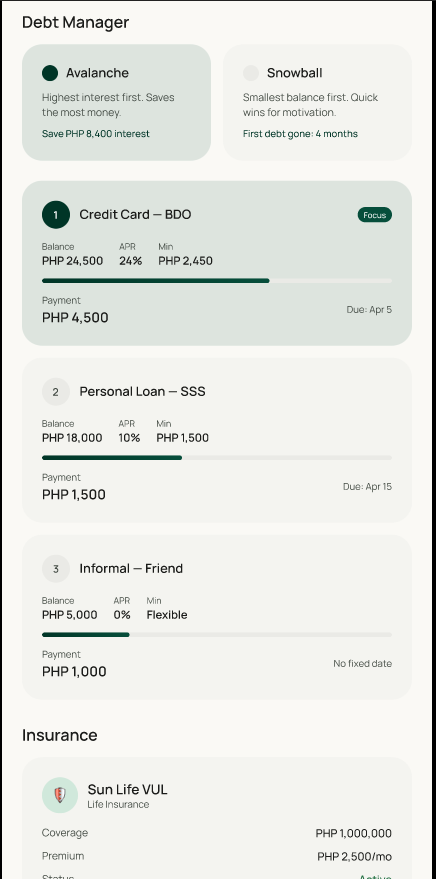
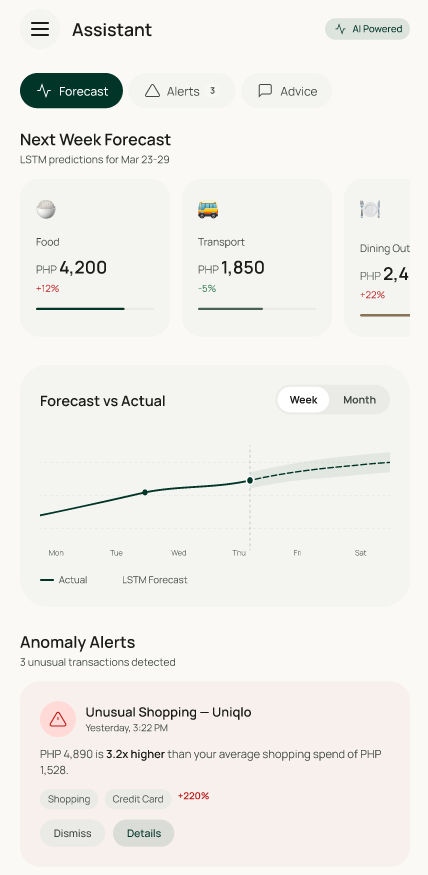
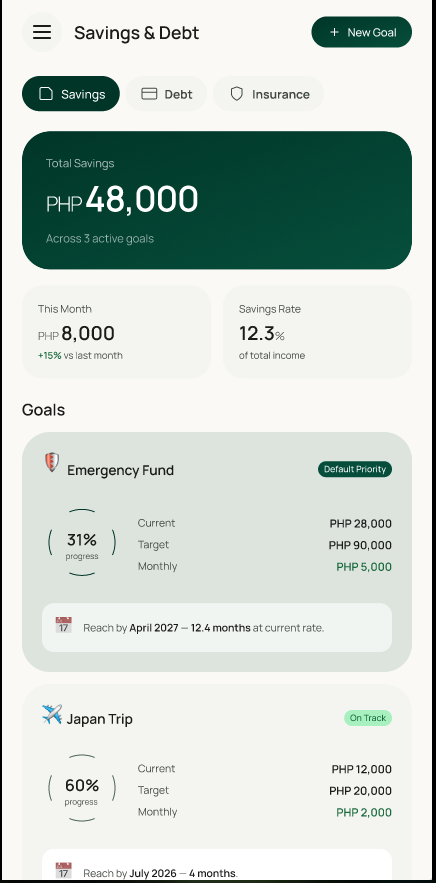
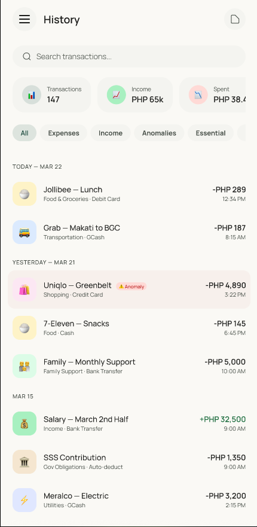
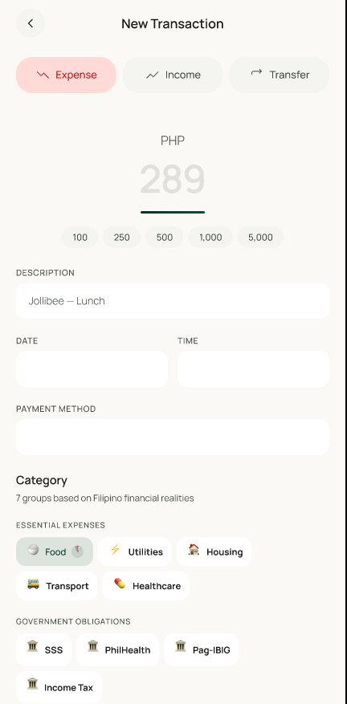

Odin helps you manage money around variable income, padala, debt, savings goals, and day-to-day spending. It gives you clear guidance without pretending your life fits a generic finance template.
Most money tools are good at logging transactions, but weak at helping users choose what to protect when life gets messy.

Most finance apps stop at tracking. Odin is built for the harder part: helping you make decisions when income shifts, obligations stack up, and every peso needs a job.
This is not a guilt app. It is a decision system for people juggling irregular cash flow, family expectations, and practical tradeoffs.
Odin adapts whether you are stable or variable, obligated or flexible. It builds budgets around your income-obligation status, instead of treating every user like they live the same financial life.

See future expenses before they hit, track savings and debt in one view, and understand where your obligations are heading next instead of only reviewing the past.

Odin listens to what matters to you, detects unusual spending, and gives guidance with context. From paluwagan and handaan to bills and debt, the alerts are meant to feel useful, not noisy.

Odin combines budgeting, forecasting, anomaly detection, classification, and long-range savings and debt planning in one workflow instead of scattering them across notes, spreadsheets, and generic finance apps.
The point is not more dashboards. The point is one calm surface where the next best money decision is easier to make.



Start building a clearer system for budgeting, debt, savings, and the real-world spending decisions most apps ignore.